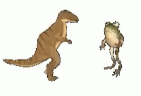

O Movimento Manguebeat desenvolveu-se em Recife, capital do estado de Pernambuco, a partir de 1991, e consistiu em uma “cena cultural”, especialmente de corte musical, que misturava elementos da cultura regional de Pernambuco, como o maracatu rural, com a cultura pop, sobretudo o rock'n roll e o hip-hop.
O Manguebeat também desenvolveu uma forma própria de exprimir visualmente essa mistura. O uso do chapéu de palha, típico da cultura pernambucana, aliado a acessórios da cultura pop, como óculos escuros, camisas estampadas, tênis e colares coloridos produziu um efeito visual
